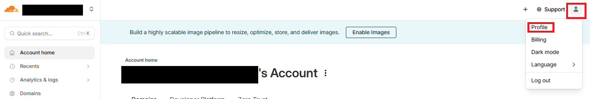
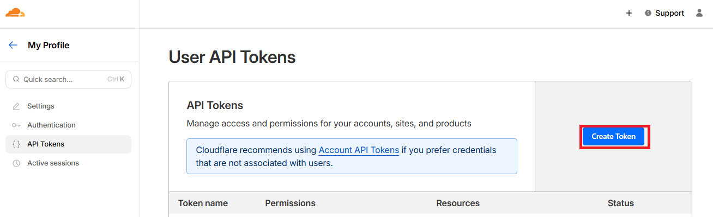
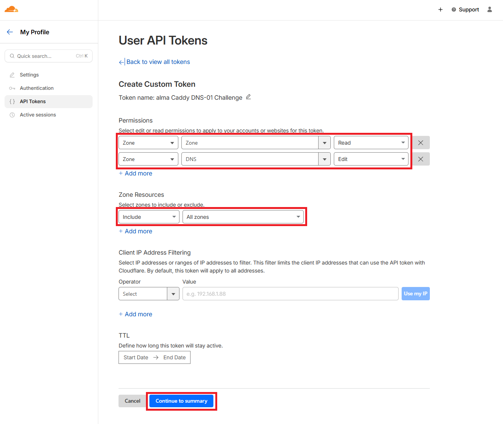

Caddy¶
Tip
The long‑term goal is to fully template the Caddyfile so you can declare services in a simple YAML file. This isn’t implemented yet, so some manual edits are still required
Important
Some parts, like what domain names or what ports you want are templated, meaning you can change them in some variable YAML, but changing how many entries or exposing only a given path is just a future plan for now.
Overview¶
Caddy is a "Fast and extensible multi-platform HTTP/1-2-3 web server with automatic HTTPS" (Github page).
However, here the only part that matters here is the reverse proxy capability.
Heads up¶
Publicly routable IP or lack thereof
If you don't have a publicly routable IP then you're in the right place.
This might happen because you're behind CGNAT or maybe some other reasons.
To make the DNS-01 challenge work, you have to have a Cloudflare account and onboard your domain. Or at least that's what I did, but probably there are other ways too.
HTTP challenge
If you have a publicly routable IP or can do DDNS, then you can go without implementing the DNS-01 challenge.
This guide does not detail how to do that, since my server is behind CGNAT.
SSL certificates¶
Official GitHub Repo of caddy-cloudflare can be found here
They have very straightforward and easy to follow docs, so check them out if you want to.
I picked a container image with the Cloudflare DNS-01 module baked in. I have no idea if you can enable it on a regular Caddy image or not.
Creating a Cloudflare API token¶
NEVER share your API token with anyone.
Tip
There may be some way to automate this step as well, but for now you can follow the manual one. You have to do it only once.
For this I followed the original guide step by step, but here's what I did:
1. Navigate to Profile > API Tokens and click Create Token:


2. ClickGet started and configure it according to this (you give it a name here as well, I forgot to highlight that part):

3. ClickContinue to summary, and create it and SAVE THE TOKEN.
Save your API key somewhere secure, because you'll need it in the following step and you can't open it again.
Update the vault¶
Tip
This might be possible to automate, I'll look into it.
For now, use the manual guide.
Since Caddy will need this API token, update your vault to include it.
In your vault, paste your token to cloudflare_api_token.
Use ansible-vault edit {vault-filename}.yml.
Certificate renewal
Lucky for us, Caddy handles this automatically, so we have nothing to do here :)
Structure¶
Quadlet¶
The deployment will be a Podman Quadlet, so it's systemd that'll manage it. This means, your commands change, and you gain some automation.
Ansible will create the .container file necessary for Quadlet and issues systemctl daemon-reload to make systemd create the .service unit.
For more information see Quadlets.
Volumes¶
Info
I use SELinux and mount volumes, directories and files accordingly.
If you put :Z that means that file or directory will be labeled to be exclusive to the container.
I’ll try to make SELinux labeling optional for systems that don’t use it.
It has 2 volumes and 1 file:
| Container Path | Host Path | Mount options | Type |
|---|---|---|---|
/data |
caddy_data |
:Z |
Podman volume |
/config |
caddy_config |
:Z |
Podman volume |
/etc/caddy/Caddyfile |
/{parent_dir}/Caddyfile |
:Z,ro |
Bind mount |
Configuration¶
Lucky for you (and me), Ansible handles the basics.
All there is to do is change some variables:
Ports
Some services can't really have their ports changed. What is listed here has been verified, but your mileage may vary.
roles/caddy/defaults/main.yml
| Variable | Default | Purpose |
|---|---|---|
caddyfile_permissions |
0644 | Set permissions of Caddyfile |
caddy_container_permissions |
0644 | Set permissions of .container file |
caddy_health_port |
8080 | Set port of Caddy's health checks |
caddy_image |
ghcr.io/caddybuilds/caddy-cloudflare:latest | Set the container image |
secrets.yml
| Variable | Purpose |
|---|---|
| cloudflare_api_token | The API token you created, so it can do DNS-01 challenge |
vars.yml
| Variable | Default | Purpose |
|---|---|---|
server_ip |
- | The LAN IP of your server |
server_tailscale_ip |
- | The Tailscale IP of your server |
parent_dir |
stack | The parent directory of, well everything |
vaultwarden_domain |
sub.example.tld | Domain of Vaultwarden |
vaultwarden_port |
1111 | Port of Vaultwarden (keep above 1024) |
influx_domain |
sub2.example.tld | Domain of InfluxDB |
influx_port |
8086 | Port of InfluxDB |
grafana_domain |
sub3.example.tld | Domain of Grafana |
mosquitto_port |
1883 | Port of Mosquitto |
podman_network |
my-network | The Podman network |
Future¶
Making the whole Caddyfile templated, meaning you can edit a YAML to change the amount of services, or what paths to expose and so on.